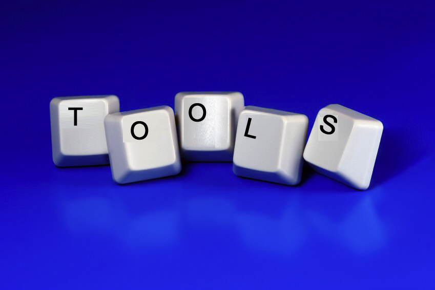
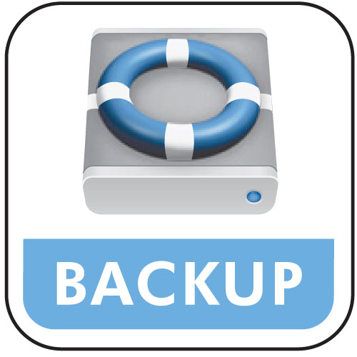

Onderhoud
Op deze pagina hebben we het over speciale toepassingen die eerder je pc 'onderhouden'.
Onder
onderhoud denken we aan:
- partitioneren van je harde schijf (=het softwarematig opsplitsen
van je harde schijf in 'meerdere' harde schijven.
- het maken van een backup van een partitie.
- voor gevorderden: een bootmanager, zodat je meerdere operating
systemen (meerder versies van Windows, Linux, ..) naast mekaar
op je pc kan gebruiken (typisch elk op één partitie)
- het 'undeleten' wanneer je per ongeluk een bestand hebt gewist.
- het 'in stukken hakken' van een groot bestand in meerdere kleine.
De lokale kopies van de programma's kan je hier vinden.
Naam: Minitool partition
wizard
Categorie: harde schijf partitioneren
Waardeoordeel: 3
Waardeoordeel op een schaal van 5 .. 1 (5='need to have', 3='good
to have', 1='nice to have')
Beschrijving: met dit programma kan je een hele reeks operaties doorvoeren op partities van harde schijven. Voor meer info verwijzen we graag door naar de website van het programma. Het programma bestaat enerzijds direct uitvoerbaar onder Windows en anderzijds als bootable cd.
Naam: Paragon backup and restore
Categorie: backup partitie
Waardeoordeel: 5
Waardeoordeel op een schaal van 5 .. 1 (5='need to have', 3='good
to have', 1='nice to have')
Beschrijving: backup en restore van een partitie. Paragon kan een bootable recovery cd aanmaken, zowel voor bios als uefi harde schijven (Ping levert geen uefi support). Je kan de backup maken onder Windows zelf, heropstarten is niet nodig.
Naam: Macrium Reflect
Categorie: backup partitie
Waardeoordeel: 4
Waardeoordeel op een schaal van 5 .. 1 (5='need to have', 3='good
to have', 1='nice to have')
Beschrijving: backup en restore van een partitie of harde schijf via een 'image' van je partitie of harde schijf. Reflect ondersteunt ook UEFI bootable schijven. Je kan onder Windows een backup maken van de partitie waar je op dat ogenblik mee werkt. Je kan met het programma ook een bootable cd laten branden zodat je de image opnieuw kan schrijven op je harde schijf, zelfs als je Windows versie helemaal om zeep was (vb. omwille van een crash van de harde schijf). Je hebt dan wel ook het pe bestand van hierboven nodig (of je maakt zelf een versie op basis van je installatie)! De lokale kopie is voor een 64 bitsversie van Windows. De 32 bits versie van het programma kan je zelf downloaden van de website van Macrium.
Naam: Gnome partition editor
Categorie: harde schijf partitioneren
Waardeoordeel: 1
Waardeoordeel op een schaal van 5 .. 1 (5='need to have', 3='good
to have', 1='nice to have')
Beschrijving: met dit programma kan je je harde schijf partitioneren. Je kan het iso bestand op een bootable cd branden en daarmee de pc opstarten. In Vista en Windows 7 zijn eveneens beperkte partitioneringsmogelijkheden ingebouwd. Indien je je harde schijf niet wenst te partitioneren is dit soort software overbodig. Voor de geavanceerde gebruiker.
Naam: Ping
Categorie: backup partitie
Waardeoordeel: 3
Waardeoordeel op een schaal van 5 .. 1 (5='need to have', 3='good
to have', 1='nice to have')
Beschrijving: backup en restore van een partitie. Je kan het iso bestand op een bootable cd branden en daarmee de pc opstarten. Dit soort software is uiterst nuttig om regelmatig een backup van je installatie en/of je gegevens te maken. Je gegevens kan je ook goed backuppen op een externe harde schijf via vb. synctoy of freesync (zie synchronisatie)
Naam: GAG bootmanager
Categorie: bootmanager
Waardeoordeel: 1
Waardeoordeel op een schaal van 5 .. 1 (5='need to have', 3='good
to have', 1='nice to have')
Beschrijving: kiezen van een bootable partitie. Je kan de andere primaire partities 'verborgen' zetten, zodat je echt onafhankelijk meerdere Windows versies op één computer kan gebruiken. Voor de geavanceerde gebruiker. Let wel op: GAG werkt niet voor UEFI harde schijven, alleen voor de oudere BIOS gebaseerde harde schijven!
Naam: PC inspector file recovery
Categorie: bestandsherstel
Waardeoordeel: 1
Waardeoordeel op een schaal van 5 .. 1 (5='need to have', 3='good
to have', 1='nice to have')
Beschrijving: ongedaan maken van een wisactie
Naam: Filesplitter
Categorie: tools
Waardeoordeel: 2
Waardeoordeel op een schaal van 5 .. 1 (5='need to have', 3='good
to have', 1='nice to have')
Beschrijving: Dit programma laat toe grote bestanden op te splitsen in meerdere kleinere en die daarna terug samen te voegen. Geen installatie nodig.